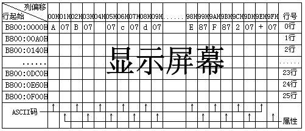

图6-6 屏幕字符与显示缓存的对应关系
如果选择了80列25行的模式（模式号2、3），那么每行将占用160字节内存，每个显示页将占用4KB内存。这时显示页起始地址与每个字符对应的内存单元如图6-7（b）所示：
注意这个偏移量指得是在一个显示页之内，并非是在整个显示缓存中的偏移地址。如果将这个偏移量换算成显示缓存中的偏移量，则还要加上"显示页号×每页占据的字节数"。程序MODE1.ASM演示了如何操纵显示缓存，为了让大家对40列25行的模式有所认识，这个程序特地使用了CGA模式1：
| -144- | PC机汇编语言实战精解 | ||||||||||||||||||||
|  图6-6 屏幕字符与显示缓存的对应关系 |
|||||||||||||||||||||
| 利用DEBUG可以验证以上的结论： | |||||||||||||||||||||
| C:\ASM\>DEBUG[Enter] | |||||||||||||||||||||
| -eb800:0[Enter] | 属性 | ||||||||||||||||||||
| B800:0000 | 53.41 | 07.01 | 45.42 | 07.41 | 54.43 | 07.81 | 55.44 | 07.94 | |||||||||||||
| B800:0008 | 50. | 字符的ASCII码 | |||||||||||||||||||
| 输入数据时请注意屏幕左上角是否出现了相应的字符和色彩。最后一个字母D的属性我们没有看到，被滚上去的内容盖掉了。不过这足以说明屏幕上每个文字和显示内存中各个字节的对应关系了。我们现在再来看看每个字符行在显示内存中的起始位置： | |||||||||||||||||||||
| C:\ASM\>DEBUG[Enter] | |||||||||||||||||||||
| -eb800:00a0[Enter] | 属性 | ||||||||||||||||||||
| B800:00A0 | 57.41 | 07.01 | 50.42 | 07.41 | 53.43 | 07.94 | 20.44 | 07.82 | |||||||||||||
| B800:00A8 | 20. | 字符的ASCII码 | |||||||||||||||||||
| 可以看到第二个字符行起始于0B800:00A0处，第一行恰好占据了0A0H个字节。由此我们可以推导出屏幕上一个特定位置所对应的显示缓冲区内的偏移量为： | |||||||||||||||||||||
| 偏移量＝行号×160＋列号×2（模式2、3） | |||||||||||||||||||||
| 偏移量＝行号×80＋列号×2（模式0、1） | |||||||||||||||||||||
|
如果程序使用了40列25行的模式（模式号0、1），那么每个字符行将占据40×2＝80字节显示缓存，每个显示页将占据80×25＝2000字节内存。因此，对于模式0、1而言，显示页起始地址与每个字符对应的内存单元如图6-7（a）所示，注意每个显示页起始于2KB内存边界： 如果选择了80列25行的模式（模式号2、3），那么每行将占用160字节内存，每个显示页将占用4KB内存。这时显示页起始地址与每个字符对应的内存单元如图6-7（b）所示： 注意这个偏移量指得是在一个显示页之内，并非是在整个显示缓存中的偏移地址。如果将这个偏移量换算成显示缓存中的偏移量，则还要加上"显示页号×每页占据的字节数"。程序MODE1.ASM演示了如何操纵显示缓存，为了让大家对40列25行的模式有所认识，这个程序特地使用了CGA模式1： |
|||||||||||||||||||||
| Copyright © 2004-2005 Chunk Lee | www.nucstorm.com | ||||||||||||||||||||